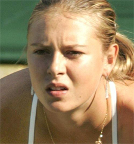
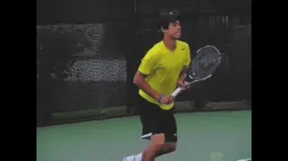
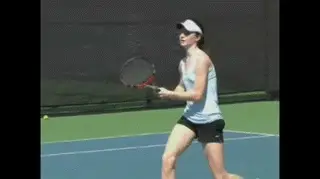

Match Preparation¶
Frank Giampaolo¶

Proper match preparation is a key to becoming a tennis warrior.
There is a thin line between competitive success and failure. A poor start, an initial lack of focus, or a bout of wavering confidence can cause a seemingly winnable match to quickly slip away.
When players know that they are fully prepared for an upcoming event, their belief in their chances of winning sky rockets. Readiness breeds confidence.
For players to achieve consistently positive match results, their preparation must include ritualistic routines. A player who is ready for battle creates an impenetrable wall that keeps all the human elements of fear away.
Players who disregard prematch rituals often unknowingly start a downward spiral that results in a loss. Lack of self-discipline leads to self-doubt, a condition that fuels nervousness and then causes a lack of confidence and low self-esteem. These negative forces have a way of fostering a lack of self-control on match day.
This article is intended to help players of all levels find this state of readiness and transform from a normal person into a tennis warrior. It focuses on three critical areas of preparation: pre match visualization, opponent scouting, and pre match physical preparation.

What are the internal processes to create your own game face?
Prematch Visualization and Imagery
Getting geared up for a match involves a type of self-hypnosis. Players use a series of internal processes to spur a metamorphosis to put on their game faces.
A powerful yet overlooked technique that can make a huge contribution to this process is the use of visualization and imagery. For prematch visualization, a player should put aside 20 minutes before the match to mentally rehearse the performance goals for the upcoming competition.
What we think about often dictates what we create. Responding correctly to those challenges is a learned behavior that is enhanced by positive imagery and visualization training.
The player starts this self-hypnosis by seeking out a quiet area away from other competitors and distractions. With closed eyes, the player takes several deep, relaxing breaths. He then creates a vivid mental image of numerous tasks being performed successfully.
This enhances the player's mental awareness and builds his confidence. The player should mentally rerun the \"movie\" several times to reinforce the thoughts. This visual experience actually trains a player to perform the skills imagined.
Perfectly executed strokes are one area for pre-match visualization.
Pre-match visualization topics are unlimited, but can include some or all of the following: Perfectly executed primary and secondary strokes. Groups of perfectly executed proactive patterns. Successful patterns of play against different styles of opponents. Between-point rituals. Protocols for dealing with common emotional issues.
Performing nightly visualization also maximizes efficiency come match day. As a player goes to sleep, the conscious, analytical, judgmental side of the brain shuts down while the creative, dream-state side of the brain awakens. This near subconscious state is when the positive images are deeply ingrained.
Visualization works best when players are very peaceful, such as when they are falling asleep, waking up, or simply relaxing in their rooms. Positive visualization produces an optimistic outlook that can change negative attitudes, boost moods, and decrease toxic levels of competitive stress.
Opponent Profiling
Observing an upcoming opponent can provide a player with information for strategic preparation that can make the difference in a match.
Areas to scout include the following:
Stroke strengths and weaknesses (advanced players should also consider an opponent's preferred strike zones). Primary style of play. Preferred serve and return patterns, especially on mega points. Dominant short-ball options.

Opponent profiling should include style of play.
Movement, agility, and stamina. Frustration tolerance. Focus. Emotional stability.
Opponent profiling should continue from the pre-match phase, through the actual match, and sometimes even into the post-match, where clues about a player's personality and emotions sometimes become apparent.
Match-Day Stretching
For all-around better performance as well as a decrease in potential injury, players should incorporate a regular stretching routine.
Part 1 is an active warm-up to elevate core body temperature. A light jog with slow windmill arm rotations, jogging in place, or light jump roping will work wonders to loosen up the body.
Part 2 is a progression into a series of dynamic stretches: tennis-specific movements that -incorporate fluid mobility. Suggestions include shoulder circles, trunk rotations, and squats and lunges for the lower body.
Prematch Warm-Up Rituals
Sam Sumyk, coach of Victoria Azarenka, says, \"Vika's prematch routine consistently includes a 45-minute stretching ritual followed by a 45-minute hitting routine.\"
While the pros have more of an opportunity to indulge their prematch routines, players who routinely warm up both their primary and secondary strokes have a major advantage in tightly contested matches.
Grooving forehands and backhands before a match is important, but a first-set tiebreak can often come down to a player executing a winning swinging volley or topspin lob. Confidently performing such shots at crunch time without hesitation stems from properly warming them up before the match.
Players who neglect their secondary strokes have a very different mind-set when faced with the same exact situation. Instead of instinctively moving forward to hit the swing volley, they hesitate and are caught thinking, I don't remember the last time I hit one of these.
Calming Prematch Run

As match time draws near, players often experience a wave of apprehension and nervousness. This fear triggers an overflow of adrenaline; it's time for fight or flight.
When players feel this sensation, they can burn off their performance anxiety by going for a short run. Players can also do this the night before the match, in the morning before they hit a ball in warm-up, and again just before the match begins.
Raising the body's core temperature warms up the muscle groups and relaxes the tension as it burns off the excess adrenaline, calming the mind and helping the player begin the match in a peak performance state.
The prematch run or runs should be customized based on the player's fitness level and emotional stability, as well as the amount of time available. If a player is not the overly nervous type, she may only need to take a short run before the match.